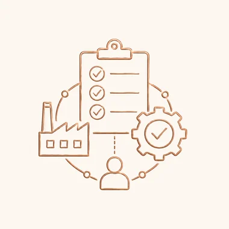

Product Development
From initial concept to buyer-ready sample, we support design interpretation, tech-pack coordination, fabric selection, fit development, and collection planning.
View service →Services
Product development, material sourcing, manufacturing coordination, quality assurance, logistics, merchandising, supplier management, and compliance support.
From initial concept to buyer-ready sample, we support design interpretation, tech-pack coordination, fabric selection, fit development, and collection planning.
View service →We help source fabrics, trims, accessories, labels, packaging, and production materials through trusted supplier networks.
View service →We coordinate with selected production partners to manage garment manufacturing, timeline follow-up, and factory communication.
View service →We support inline, midline, and final inspection processes to help maintain buyer expectations, product consistency, and shipment readiness.
View service →We assist with packing coordination, shipment preparation, documentation support, and delivery follow-up.
View service →Our merchandising team helps manage buyer communication, sample tracking, order updates, and production coordination.
View service →
We connect buyers with suitable factories and help manage supplier communication, capacity planning, and production follow-up.
View service →We work with partner factories to support responsible sourcing, documentation review, and compliance-focused buyer requirements.
View service →How services connect
Velora can support an entire program or a specific sourcing stage. The goal is to create clarity before sampling, during production, and before shipment.
See Process